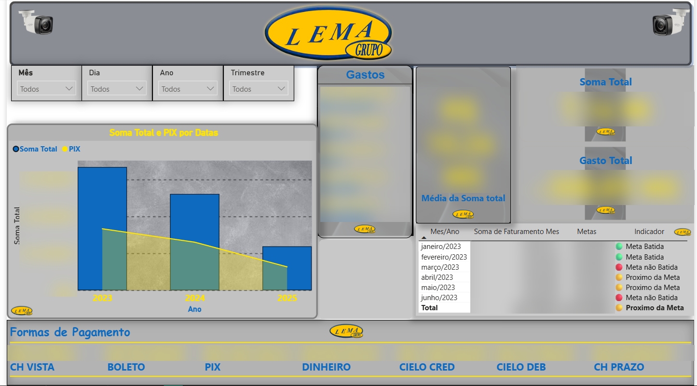

Valores borrados para preservar os dados da empresa. Toque ou passe o mouse nos números.
Power BI · DAX · Excel
Dashboard financeiro · Grupo LEMA
Centralizei a análise de dados da empresa num único painel. Antes espalhadas em planilhas, as informações de faturamento, gastos e metas passaram a ficar num lugar só, e as decisões ficaram mais fáceis.